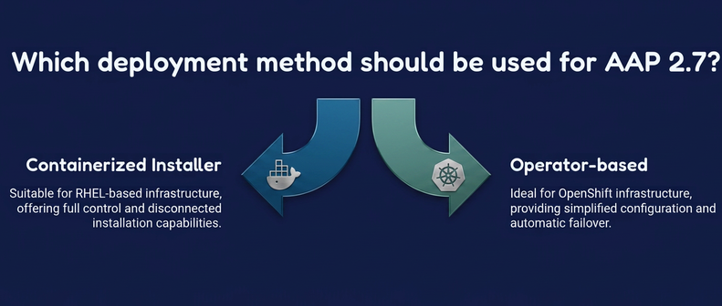

Containerized vs Operator Deployment
AAP 2.7 offers two deployment methods. Understanding when to use each is important:

Containerized Installer (RHEL-based)
What it is: Ansible role that deploys AAP as Podman containers on RHEL hosts
When to use:
-
RHEL-based infrastructure
-
You want full control over the infrastructure
-
You’re comfortable managing RHEL systems
-
You need disconnected/air-gapped installations
-
Existing infrastructure automation with Ansible
Characteristics:
-
Deployment: Using containers for each component.
-
Configuration: Manual inventory file edits
-
Management: Podman with systemd units
-
Network: Manual firewall rules
-
Upgrades: Re-run installer with updated inventory
Management complexity: Medium to High
Operator-based (OpenShift)
What it is: Kubernetes operator managing AAP on OpenShift Container Platform
When to use:
-
OpenShift infrastructure
-
You want simplified configuration
-
You prefer cloud-native operations
-
You need automatic failover
-
You have OpenShift expertise
Characteristics:
-
Deployment: Kubernetes operator
-
Configuration: Single CR (Custom Resource) field
-
Management: Kubernetes deployments managed by operator
-
Network: Automatic Kubernetes services and routes
-
Upgrades: Operator handles upgrades automatically
Management complexity: Low (if you know Kubernetes/OpenShift)
Aspect |
Containerized Installer |
Operator (OpenShift) |
Platform |
RHEL |
OpenShift |
Deployment method |
Ansible role |
Kubernetes operator |
Configuration complexity |
Manual inventory |
Single CR field |
Database provisioning |
Administrator provisions |
Operator auto-provisions |
Container management |
Podman with systemd |
Kubernetes deployments |
Network configuration |
Manual firewall/ports |
Automatic K8s services |
OAuth integration |
Manual |
Automatic with platform gateway |
Upgrades |
Re-run installer |
Operator handles via CR updates |
Backup/restore |
Manual playbook |
Operator-managed CR |
|
Choose based on your existing infrastructure. If you are already using RHEL, the containerized installer integrates smoothly. If you are on OpenShift, the Operator simplifies operations significantly. |